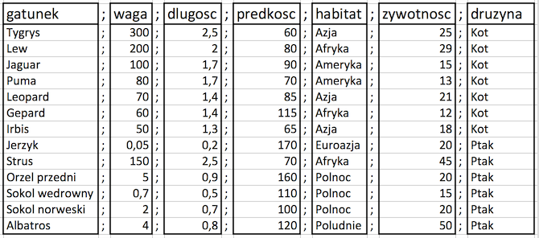

Jak wczytać tabelę danych z pliku csv lub txt?
Jednym z bardziej uniwersalnych formatów przechowywania danych są pliki tekstowe, a więc takie, które możemy otworzyć w dowolnym edytorze, też w RStudio.
Pliki tekstowe zawierajace tabele z danymi mają zazwyczaj rozszerzenie csv (od ang. comma separated values, wartości rozdzielane przecinkami) lub txt.
Przyjrzymy się tabeli z danymi zapisanymi w pliku http://biecek.pl/MOOC/dane/koty_ptaki.csv. Poniżej wklejam treść tego pliku.
gatunek;waga;dlugosc;predkosc;habitat;zywotnosc;druzyna
Tygrys;300;2,5;60;Azja;25;Kot
Lew;200;2;80;Afryka;29;Kot
Jaguar;100;1,7;90;Ameryka;15;Kot
Puma;80;1,7;70;Ameryka;13;Kot
Leopard;70;1,4;85;Azja;21;Kot
Gepard;60;1,4;115;Afryka;12;Kot
Irbis;50;1,3;65;Azja;18;Kot
Jerzyk;0,05;0,2;170;Euroazja;20;Ptak
Strus;150;2,5;70;Afryka;45;Ptak
Orzel przedni;5;0,9;160;Polnoc;20;Ptak
Sokol wedrowny;0,7;0,5;110;Polnoc;15;Ptak
Sokol norweski;2;0,7;100;Polnoc;20;Ptak
Albatros;4;0,8;120;Poludnie;50;Ptak
Jeżeli przyjrzymy się treści tego pliku, to zobaczymy, że zawiera on tabelę wartości, rozdzielanych średnikami. Pierwszy wiersz to nagłówek z nazwami kolumn (gatunek;waga;dlugosc;predkosc;habitat;zywotnosc;druzyna).

Aby dane w tym formacie wczytać do programu R, można wykorzystać funkcję read.table().
Na poniższym przykładzie wczytana tabela liczb jest przypisywana za pomocą operatora <- do symbolu koty_ptaki.

Funkcja read.table() ma wiele argumentów (ich listę można spradzić w pliku pomocy pod hasłem ?read.table), ale nie musimy ich wszystkich określać. Wystarczy wskazać nazwę pliku oraz te argumenty, które powinny mieć inne wartości niż domyślne.
W przypadku rozważanego pliku musimy określić argumenty file = "http://biecek.pl/MOOC/dane/koty_ptaki.csv" (ścieżka do pliku tekstowego, w tym przypadku czytamy dane bezpośrednio z internetowego adresu), sep=";" (separatorem kolejnych pól będzie średnik), dec="," (separatorem dziesiętnym jest przecinek), header=TRUE (pierwszy wiersz ma nagłówek). Ponieważ wynik tej funkcji nie jest do niczego przypisany, dlatego wczytany zbiór danych jest wyświetlany na ekranie.
koty_ptaki <- read.table(file = "http://biecek.pl/MOOC/dane/koty_ptaki.csv",
sep=";", dec=",", header=TRUE)
# Wypiszmy zawartość symbolu koty_ptaki
koty_ptaki
## gatunek waga dlugosc predkosc habitat zywotnosc druzyna
## 1 Tygrys 300.00 2.5 60 Azja 25 Kot
## 2 Lew 200.00 2.0 80 Afryka 29 Kot
## 3 Jaguar 100.00 1.7 90 Ameryka 15 Kot
## 4 Puma 80.00 1.7 70 Ameryka 13 Kot
## 5 Leopard 70.00 1.4 85 Azja 21 Kot
## 6 Gepard 60.00 1.4 115 Afryka 12 Kot
## 7 Irbis 50.00 1.3 65 Azja 18 Kot
## 8 Jerzyk 0.05 0.2 170 Euroazja 20 Ptak
## 9 Strus 150.00 2.5 70 Afryka 45 Ptak
## 10 Orzel przedni 5.00 0.9 160 Polnoc 20 Ptak
## 11 Sokol wedrowny 0.70 0.5 110 Polnoc 15 Ptak
## 12 Sokol norweski 2.00 0.7 100 Polnoc 20 Ptak
## 13 Albatros 4.00 0.8 120 Poludnie 50 Ptak
W programie R Studio w prawym górnym oknie, zatytułowanym Environment wyświetlane są symbole widoczne w głównym środowisku. Dwukrotne kliknięcie na wskazany symbol spowoduje otwarcie okna prezentującego zawartość zmiennej. W ten sposób możemy szybko podejrzeć co wczytało się do zmiennej koty_ptaki. Z przyczyn wydajnościowych wyświetlanych jest tylko pierwsze 1000 wierszy i kilkaset kolumn. Tak więc dla dużych zbiorów danych wyświetlony będzie tylko fragment całego zbioru.

Inne narzędzia
Dla dużych plików wczytywanie funkcją read.table() może być czasochłonne, w takich sytuacjach warto rozważyć również funkcję fread {data.table}.